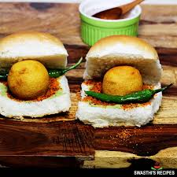

Classic Mumbai Vada Pav Recipe

- Prep Time: 20 minutes
- Cook Time: 25 minutes
- Servings: 8 vada pavs
- Difficulty: Easy to Moderate
Ingredients
For the Spiced Potato Filling (Batata Vada)
- 500 g (about 4 medium) potatoes, boiled, peeled, and mashed
- 1 tbsp oil
- 1 tsp mustard seeds
- 1/2 tsp cumin seeds
- 1/8 tsp asafoetida (hing)
- 8-10 fresh curry leaves
- 2 green chilies, finely chopped or crushed
- 1-inch piece ginger, grated or crushed
- 5-6 garlic cloves, crushed
- 1/2 tsp turmeric powder
- 2 tbsp fresh coriander leaves, finely chopped
- 1 tsp lemon juice
- Salt to taste
For the Besan Batter
- 1.5 cups (about 150 g) gram flour (besan)
- 2 tbsp rice flour (for extra crispiness)
- 1/4 tsp turmeric powder
- 1/2 tsp red chili powder
- 1/4 tsp carom seeds (ajwain), optional
- 1 pinch baking soda
- 1/2 tsp salt
- Water as needed (approx. 3/4 cup) to make a smooth, thick-flowing batter
- Oil for deep frying
For the Dry Garlic Chutney (Sukha Chutney)
- 1/4 cup desiccated coconut
- 2 tbsp roasted peanuts
- 8-10 garlic cloves (peeled or unpeeled)
- 1.5 tbsp Kashmiri red chili powder (for bright color and mild heat)
- Salt to taste
For Assembly
- 8 ladi pav (soft Indian dinner rolls)
- 1/2 cup green coriander-mint chutney
- 1/4 cup sweet tamarind chutney (optional)
- 6-8 whole green chilies (slit lengthwise)
Instructions
- Make the dry garlic chutney: Dry roast the desiccated coconut, peanuts, and garlic cloves in a pan over low heat until fragrant and lightly golden. Let the mixture cool completely, then grind coarsely with Kashmiri red chili powder and salt. Set aside.
- Temper the potato masala: Heat 1 tablespoon of oil in a pan over medium heat. Add mustard seeds and let them crackle, then add cumin seeds, asafoetida, and curry leaves.
- Sauté aromatics: Add the crushed green chilies, ginger, and garlic. Sauté for 30 to 60 seconds until the raw aroma disappears.
- Mix the filling: Stir in turmeric powder and salt, then add the mashed potatoes. Mix well and cook for 2 minutes. Turn off the heat, mix in fresh coriander and lemon juice, and let the mixture cool.
- Shape the vadas: Divide the cooled potato mixture into 8 equal portions and roll them into smooth balls or slightly flattened patties.
- Prepare the batter: Whisk together gram flour, rice flour, turmeric, red chili powder, carom seeds, and salt in a bowl. Gradually add water while whisking until you get a smooth batter thick enough to coat the back of a spoon. Stir in the pinch of baking soda right before frying
- 7. Deep-fry the vadas: Heat oil in a deep pan or kadhai over medium-high heat. Dip each potato ball into the batter until evenly coated, gently slide it into the hot oil, and fry in batches until crisp and golden brown. Drain on paper towels.
- Fry the green chilies: Carefully drop the slit green chilies into the hot oil for 15 to 20 seconds until blistered. Remove immediately and sprinkle with a pinch of salt.
- Assemble and serve: Slice each pav horizontally without cutting all the way through. Spread green chutney on one inner side and tamarind chutney on the other, sprinkle a generous pinch of dry garlic chutney inside, place a hot vada in the center, and serve immediately with a salted fried green chili.
TIPS
- Batter consistency: If the batter is too thin, it will drip off the potatoes; if too thick, the outer shell will feel doughy. Test a drop in hot oil—it should rise immediately.
- Street-style chura: Drizzle leftover batter droplets into the hot oil to fry crisp golden crumbs (chura), then crush and mix them into your dry garlic chutney or sprinkle inside the pav for extra crunch.
- Chili safety: Always make a small slit in whole green chilies before frying so they do not burst in hot oil.